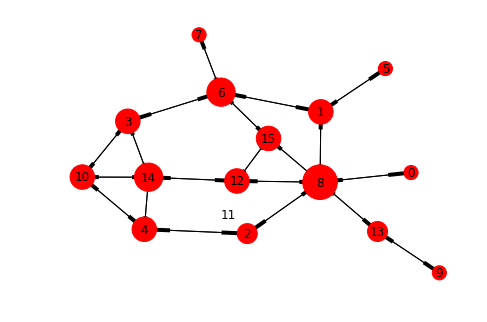
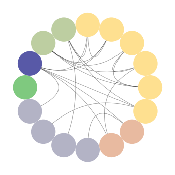
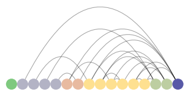
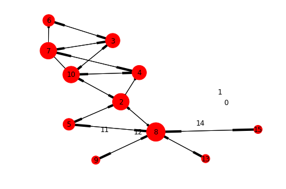
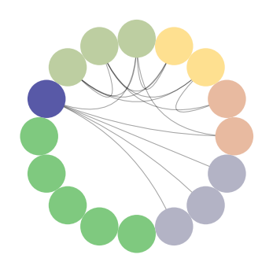
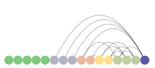

Introduction
Many of the most difficult fields of study are those involving the complex and dynamic relationships between people. Throughout history there have been many schools of thought and methodologies established to better understand who we are and how that occurs due to numerous social relations over time and space.
The discipline of social network analysis (SNA) has proven to be one of the most useful schools of thought in the study of social structures. The theories and methodologies within SNA have proven useful for political, economic, and cultural research, opening new areas of study through an array of innovative and adaptable techniques. More recently, SNA has proven extremely useful in the study of digital spaces such as social media networks, computer infrastructures, and massive collections of heterogeneous data sets.
Getting Started
We are now going to perform some basic social network analysis using Python. There are two libraries we are going to be focusing on for this: NetworkX and nxviz. NetworkX is a Python library built to study networks. nxviz is a graph visualization library that builds from NetworkX. Together, these packages give us a great starting point for analysis of social networks.
First, let's import our support libraries. I used Jupyter Lab for my analysis.
# import our libraries for analysis import pandas as pd import matplotlib.pyplot as plt import networkx as nx from nxviz import MatrixPlot, ArcPlot, CircosPlot %matplotlib inline
Next, let's import our network data from a CSV file. We'll be analyzing a marriage network between 16 Florentine families during the Renaissance based on the work of Padgett and Ansell (1991).
# create dataframes from our CSV files
padgm = pd.read_csv('data/padgm.csv', index_col=0)
# show descriptive stats for the padgm dataframe
padgm.describe(include='all')
Graphing the Network
After loading the data into a dataframe and reviewing the descriptive statistics, we can now begin to graph the marriage network.
# create a graph object # give it our dataframe values as a numpy array graph_padgm = nx.DiGraph(padgm.values)
Once we have our directed graph object, we can now begin to add some depth to our nodes (e.g., our families). Let's first assign our nodes the family names and their degree centrality as data values.
# create a list of names from our dataframe index
names = list(padgm.index)
# create a list of k:v pairs for node degree
degree = nx.degree(graph_padgm)
# for each node in our node list
for i in graph_padgm.nodes:
# add a name attribute from the names list if it equal our node value
graph_padgm.add_node(i, name=names[i])
# add a degree attribute from the degree list if it equals our node value
graph_padgm.add_node(i, degree=degree[i])
We can exam our nodes with data and our edges with the following commands.
# show out nodes with all metadata list(graph_padgm.nodes(data=True)) # Show the first 5 edges in our edge list list(graph_padgm.edges())[0:5]
Once we're satisfied with the nodes and edges of our graph object, we can now create a graph visualization. We are going to use a force-directed gravity rendering for our graph with the nodes graduated by their degree within the network.
# render the force-directed graph
# arrow and labels will be shown
# mulitple the value of each degree value by 100 from out node metadata
# a new window will pop-up with the graph
nx.draw_kamada_kawai(graph_padgm, arrows=True, with_labels=True, node_size=[v * 100 for v in dict(graph_padgm.nodes.data('degree')).values()])

Graph of padgm dataset
{kind=link}
We are beginning to see some nodes of interest in our family marriage network, but there are other ways of seeing this. We can use our nxviz library CircosPlot to see these relations.
# create a circos plot for padgm with nodes colored and ordered by degree # highest to lowest degree from purple going clockwise padgm_circos = CircosPlot(graph_padgm, node_color='degree', node_order='degree') padgm_circos.draw() CircosPlot of padgm dataset
{kind=link}
Similarly, we can use the nxviz ArcPlot to the same effect.
# Create an arcplot for padgm with nodes colored and ordered by degree # highest to lowest degree from purple going right to left padgm_arc = ArcPlot(graph_padgm, node_order='degree', node_color='degree') padgm_arc.draw() ArcPlot of padgm dataset
{kind=link}
Number 8 in the directed graph and the purple nodes in the nxviz plots are the Medici family. They appear to be a family that marries into other families and a family into which others tend to marry. We should now compare this to these same families' business network to see if there is overlap with the marriage network. We will run the same processes as above.
# create dataframes from our CSV files
padgb = pd.read_csv('data/padgb.csv', index_col=0)
# show descriptive stats for the padgb dataframe
padgb.describe(include='all')
# Now lets do the same thing for padgb
graph_padgb = nx.DiGraph(padgb.values)
names = list(padgb.index)
degree = nx.degree(graph_padgb)
for i in graph_padgb.nodes:
graph_padgb.add_node(i, name=names[i])
graph_padgb.add_node(i, degree=degree[i])
nx.draw_kamada_kawai(graph_padgb, arrows=True, with_labels=True, node_size=[v * 100 for v in dict(graph_padgb.nodes.data('degree')).values()])

Graph of padgb dataset
{kind=link}
padgb_circos = CircosPlot(graph_padgb, node_color='degree', node_order='degree') padgb_circos.draw() CircosPlot of padgb dataset
{kind=link}
padgb_arc = ArcPlot(graph_padgb, node_order='degree', node_color='degree') padgb_arc.draw() ArcPlot of padgb dataset
{kind=link}
Here again, we see the Medici with a high degree of centrality (connected to many of the same families) suggesting that there may be a strong connection between marriage and business. This assumption is further reinforced in examination of clusters that reoccur outside of the Medici's immediate relations (e.g., nodes 10, 3, and 4).
NetworkX allows us to dig further into these networks, such as examining clusters and subgroups. But this has illustrated a how SNA can provide insights for our study of people and their connections.
For further reading, I highly recommend Analyzing Social Networks by Borgatti, Everett, and Johnson.
References
Padgett & Ansell (1991). Marriage ties among Florentine families during the Renaissance.
Borgatti, Everett, & Johnson (2018). Analyzing social networks. Sage.
This work is licensed under a Creative Commons Attribution-NonCommercial-ShareAlike 4.0 International License.